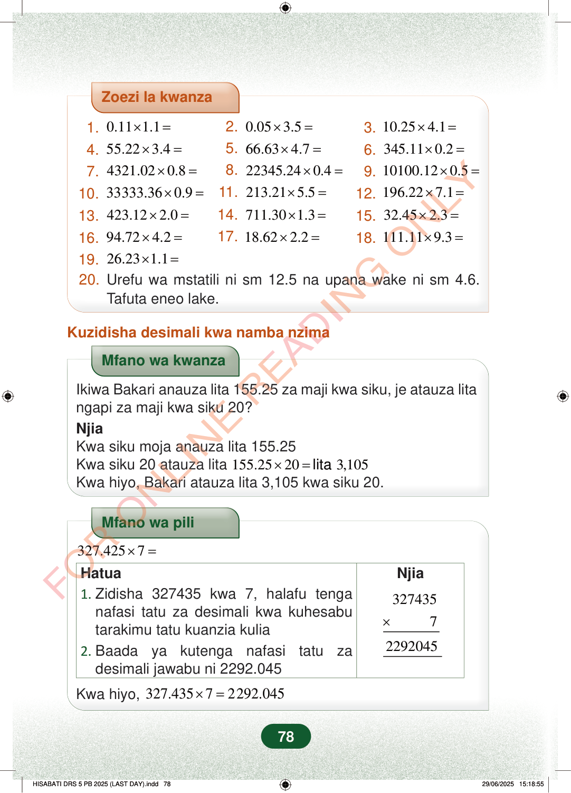

Zoezi la kwanza1.0.111.1×=2.0.053.5×=3.10.254.1×=4.55.223.4×=5.66.634.7×=6.345.110.2×=7.4321.020.8×=8.22345.240.4×=9.10100.120.5×=10.33333.360.9×=11.213.215.5×=12.196.227.1×=13.423.122.0×=14.711.301.3×=15.32.452.3×=16.94.724.2×=17.18.622.2×=18.111.119.3×=19.26.231.1×=20.Urefu wa mstatili ni sm 12.5 na upana wake ni sm 4.6.Tafuta eneo lake.Kuzidisha desimali kwa namba nzimaMfano wa kwanzaIkiwa Bakari anauza lita 155.25 za maji kwa siku, je atauza litangapi za maji kwa siku 20?NjiaKwa siku moja anauza lita 155.25Kwa siku 20 atauza lita155.25203,105×=litaKwa hiyo, Bakari atauza lita 3,105 kwa siku 20.Mfano wa pili327.4257×=Njia×32743572292045Hatua1.Zidisha 327435 kwa 7, halafu tenganafasi tatu za desimali kwa kuhesabutarakimu tatu kuanzia kulia2.Baada ya kutenga nafasi tatu zadesimali jawabu ni 2292.045Kwa hiyo,327.43572292.045×=78
Zoezi la kwanza
1. 0.11 1.1 × = 2. 0.05 3.5 × = 3. 10.25 4.1 × =
4. 55.22 3.4 × = 5. 66.63 4.7 × = 6. 345.11 0.2 × =
7. 4321.02 0.8 × = 8. 22345.24 0.4 × = 9. 10100.12 0.5 × =
10. 33333.36 0.9 × = 11. 213.21 5.5 × = 12. 196.22 7.1 × =
13. 423.12 2.0 × = 14. 711.30 1.3 × = 15. 32.45 2.3 × =
16. 94.72 4.2 × = 17. 18.62 2.2 × = 18. 111.11 9.3 × =
19. 26.23 1.1 × = 20. Urefu wa mstatili ni sm 12.5 na upana wake ni sm 4.6. Tafuta eneo lake.
Kuzidisha desimali kwa namba nzima
Mfano wa kwanza
Ikiwa Bakari anauza lita 155.25 za maji kwa siku, je atauza lita ngapi za maji kwa siku 20? Njia Kwa siku moja anauza lita 155.25 Kwa siku 20 atauza lita 155.25 20 3,105 × = lita Kwa hiyo, Bakari atauza lita 3,105 kwa siku 20.
Mfano wa pili
327.425 7 × =
Njia
×
327435 7
2292045
Hatua 1. Zidisha 327435 kwa 7, halafu tenga nafasi tatu za desimali kwa kuhesabu tarakimu tatu kuanzia kulia 2. Baada ya kutenga nafasi tatu za desimali jawabu ni 2292.045
Kwa hiyo, 327.435 7 2292.045 × =
78
Zoezi la kwanza lenye maswali 20 ya kuzidisha desimali. Swali la mwisho linauliza eneo la mstatili wenye urefu wa sentimita 12.5 na upana wa sentimita 4.6.Zoezi la kwanza1.0.11\times1.1 =2.0.05\times3.5 =3.10.25\times4.1 =4.55.22\times3.4 =5.66.63\times4.7 =6.345.11\times0.2 =7.4321.02\times0.8 =8.22345.24\times0.4 =9.10100.12\times0.5 =10.33333.36\times0.9 =11.213.21\times5.5 =12.196.22\times7.1 =13.423.12\times2.0 =14.711.30\times1.3 =15.32.45\times2.3 =16.94.72\times4.2 =17.18.62\times2.2 =18.111.11\times9.3 =19.26.23\times1.1 =20.Urefu wa mstatili ni sm 12.5 na upana wake ni sm 4.6.Tafuta eneo lake.Kuzidisha desimali kwa namba nzimaMfano wa kwanza wa kuzidisha desimali kwa namba nzima. Bakari akiuza lita 155.25 za maji kwa siku, kwa siku 20 atauza lita 3,105.Mfano wa kwanzaIkiwa Bakari anauza lita 155.25 za maji kwa siku, je atauza lita ngapi za maji kwa siku 20?NjiaKwa siku moja anauza lita 155.25Kwa siku 20 atauza lita 155.25 × 20 = lita 3,105Kwa hiyo, Bakari atauza lita 3,105 kwa siku 20.Mfano wa pili unaonyesha 327.435 mara 7. Kwanza zidisha 327435 kwa 7, kisha rudisha nafasi tatu za desimali kupata 2292.045.Mfano wa pili327.425\times7 =HatuaNjia1. Zidisha 327435 kwa 7, halafu tenga nafasi tatu za desimali kwa kuhesabu tarakimu tatu kuanzia kulia2. Baada ya kutenga nafasi tatu za desimali jawabu ni 2292.045<math><mtable><mtr><mtd class="tml-right" style="padding-left:0pt;padding-right:0pt;"><mn>327435</mn></mtd></mtr><mtr><mtd class="tml-right" style="border-bottom:0.06em solid;padding-left:0pt;padding-right:0pt;"><mrow><mo form="prefix" stretchy="false">×</mo><mspace width="1em"></mspace><mn>7</mn></mrow></mtd></mtr><mtr><mtd class="tml-right" style="padding-left:0pt;padding-right:0pt;"><mn>2292045</mn></mtd></mtr></mtable></math>Kwa hiyo, 327.435 × 7 = 2292.045